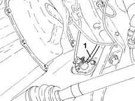
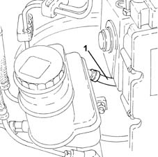

1820B40 FLEXIBLE PIPE from clutch reservoir to (pump) - master cylinder R.R.
- Path
- Procedures > 18 CLUTCH > 1820 CLUTCH RELEASE CONTROLS > 1820B HYDRAULIC CLUTCH SYSTEM > 1820B40 FLEXIBLE PIPE from clutch reservoir to (pump) - master cylinder R.R.
- Kind
- repair procedure (removal / refitting; the operation number is the code)
- Applies to
- all engines; all production periods
- Interactive page
- https://sloeber94.github.io/elrnDB-lYpsln/en/#/2429103
Applies to: all engines; all production periods
 Removing
Removing
 Refitting
RefittingPosition the vehicle on the ramp.
Proceed with removal 5530B10 battery - r+r .
Proceed with removal 4450B02 left front wheel r r .
Proceed with removal 7055B90 Left front WHEEL ARCH LINER - R.R. .
1. Loosen the band and disconnect the flexible pipe from the clutch reservoir to the master cylinder, master cylinder side.

Applies to: all engines; all production periods
1. Loosen the band, disconnect the hose from the reservoir to the master cylinder on the reservoir side and remove it.

Applies to: all engines; all production periods
Refitting
RemovingPlace the hose from the reservoir to the master cylinder back in its housing, connect it to the reservoir and tighten the band.
Connect the flexible pipe from the clutch reservoir to the master cylinder, master cylinder side and tighten the band.
Proceed with refitting 0010T64 brake and or clutch fluid check level and top up as necessary .
Proceed with refitting 0010T67 hydraulic clutch system bleed air .
Proceed with refitting 7055B90 Left front WHEEL ARCH LINER - R.R. .
Proceed with refitting 4450B02 left front wheel r r .
Proceed with refitting 5530B10 battery - r+r .
Remove the car from the ramps.